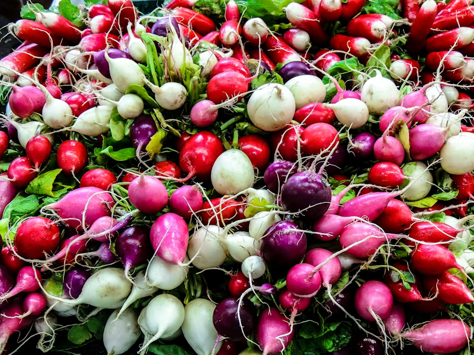

Ministry Announces Record Turnip Harvest Following “National Soil Discipline Initiative”

Dateline: Capital Province — May 10
T
he Ministry of Agricultural Stability announced yesterday that this year’s national turnip
harvest
has exceeded all projected targets, describing the achievement as “clear evidence of the
population’s renewed commitment to productive citizenship.”
According to official figures released during a ceremony at the Central Crop Administration
Building, turnip yields increased by 18 percent following the implementation of the government’s
Soil Discipline Initiative earlier this year.
Minister of Agriculture Edric Vale praised workers for what he called “their unwavering loyalty
to
nutritional self-sufficiency.”
“Our nation has once again demonstrated that discipline, obedience, and properly aligned
planting
schedules can overcome any obstacle,” Vale declared to an audience of factory delegates,
schoolchildren, and selected farmers.
The initiative introduced mandatory dawn gardening periods in urban districts, along with weekly
motivational broadcasts reminding citizens that “Every Turnip Strengthens the Nation.”
State television aired footage throughout the day showing smiling families harvesting vegetables
while patriotic orchestras performed in the background. In several districts, residents
reportedly
organized spontaneous parades honoring local irrigation supervisors.
Officials also unveiled the new “Turnip Efficiency Banner,” a red-and-gold award to be presented
to
neighborhoods achieving above-average root density.
Meanwhile, the Ministry of Public Harmony dismissed rumors of produce shortages in northern
provinces as “mathematically irresponsible speculation.” Citizens were encouraged to rely only
on
approved nutritional statistics published through official channels.
To celebrate the harvest milestone, schools nationwide will participate this week in
synchronized
appreciation meals featuring roasted turnip medallions, turnip broth, and the newly introduced
Victory Turnip Loaf.
In the capital, banners hanging from government buildings displayed the national slogan:
“DEEP ROOTS, STRONG PEOPLE, STABLE FUTURE.”
The Ministry confirmed that next year’s agricultural priorities will include expanded beet
cultivation and the continued reduction of “unnecessary decorative flowers.”